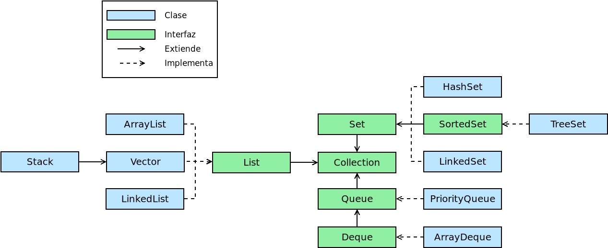
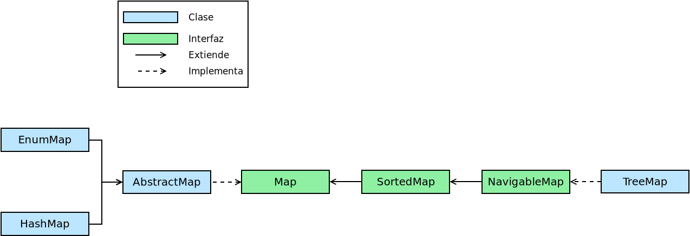

Colecciones#
Nota
Las colecciones, en realidad, están disponibles desde muy tempranamente (desde Java1.2 en 1998). Se incluyen, no obstante, porque se usan habitualmente en el estilo funcional de programación.
El tipo más básico de agrupar datos en Java es el Array:
String[] s = new String[] {"A", "B", "C"}; // O, simplemente, {"A", "B", "C"}
int[] t = new int[3]; // Pone todos los elementos a 0.
Sin embargo, en su creación hay que establecer un tamaño determinado y no siempre es posible prever cuántos serán los elementos que contendrá como máximo. Para solucionar estos casos existe la interfaz Collection<E> que extiende Iterable<E>.
Nota
Para convertir una array existente en una lista puede usarse Arrays.asList:
String[] s = new String[] {"A", "B", "C"};
Arrays.asList(s); // ["A", "B", "C"]
Collection#
java.util.Collection es una interfaz que representa un grupo de objetos, cada uno de los cuales se llama «elemento». Dependiendo de implementaciones más específicas los elementos podrán estar ordenador (java.util.List) o desordenados (java.util.Set).
Interfaz#
Esta interfaz recoge todos los métodos que describen los comportamientos asociados a que el objeto sea una colección entre ellos:
size()que devuelve la cantidad de elementos que contiene la colección.
add(E e)yaddAll(Collection<E> c)que añaden a la colección un nuevo elemento o todos los elementos de otra colección.
remove(E e)yremoveAll(Collection<E> c)que eliminan en vez de añadir.
removeIf(Predicate<E> filter)que elimina los elementos que cumplen el predicado que hace de filtro. Por ejemplo:
Collection<Integer> c = new ArrayList<>(List.of(1, 2, 3, 4, 5, 6)); c.removeIf(n -> n % 2 == 0); // Elimina todos los números pares.
clear()que vacía la colección.
isEmpty()que comprueba si la colección está vacía.
equals(Object o)que comprueba si dos colecciones son iguales:
Collection<Integer> c = new ArrayList<>(List.of(1, 2, 3, 4, 5, 6)); c.removeIf(n -> n % 2 == 0); Collection<Integer> d = new ArrayList<>(List.of(1, 3, 5)); c.equals(d); // true
contains(Object o)que comprueba si el objeto está incluido en la colección.
containsAll(Collection<E> c)que comprueba si todos los objetos de la colección suministrada se encuentran en la colección.
stream()que devuelve un flujo con los elementos de la colección.
toArray()que devuelve un array con los elementos de la colección. Sin argumentos, los elementos del array generado se considerarán objetos de tipo
Objectcon lo que normalmente interesa especificar el tipo particular:Collection<Integer> c = new ArrayList<>(List.of(1, 2, 3, 4, 5, 6)); c.toArray(Integer[]::new); // también c.toArray(new Integer[0]);
.forEach(Consumer<E> c)que ejecuta la función consumidora que se proporciona como argumento para cada elemento de la colección:
// Dependiendo de la naturaleza de "c" podremos o no predecir el orden. c.forEach(e -> System.out.println(e)); // También c.forEach(System.out:println)
Además, como las colecciones son iterables, siempre podremos usar con ellas una estructura de tipo for-each como alternativa a este método:
for(Integer n: c) { System.out.println(c); }
Prudencia
No todas las colecciones son mutables, por lo que con aquellas que
no lo sean no será posible usar los métodos que alteran su contenido
(add, remove, etc.)
Implementaciones#
Dependiendo de las características que deseamos que presenten las colecciones, deberemos elegir la implementación más apropiada.
Listas#
La naturaleza de algunas implementaciones es la de una secuencia ordenada de elementos a los cuales se puede acceder individualmente (java.util.List). Por eso se añaden métodos como:
get(int i)que permite obtener el elemento i-ésimo.
indexOf(Object o)ylastIndexOf(Object o)que obtienen respectivamente la posición de la primera y la última ocurrencia del objeto que se proporciona como argumento.
add(int i, E e)que añade un nuevo elemento en la posición especificado.
set(int i, E e)que lo sustituye en vez de añadirlo.
remove(int i)que elimina el elemento i-ésimo.
sort(Comparator<E> c)que reordena los elementos utilizando el comparador facilitado en el argumento.
subList(int i, int j)que devuelve una lista con los elementos incluidos entre la posición «i» y la «j» (este último sin incluir).
replaceAll(UnaryOperator<E> o)sustituye cada elemento por el resultado de aplicarle la función suministrada como argumento.
Nota
Nótese que es el típico map de la programación funcional, pero alterando la propia colección y no generando una nueva.
Implementaciones particulares de las listas son:
- ArrayList
se comporta, digámoslo así, como un array de dimensiones dinámicas, de manera que, a diferencia de aquellos, podemos ir incrementando su tamaño a voluntad. En principio, tiene un tamaño suficiente para almacenar los elementos que contiene, pero si se añaden tantos que se vuelve insuficiente, se redimensiona automáticamente.
List<String> al = new ArrayList<>(); al.add("A"); al.add("B"); al.size(); // 2 al.get(1); // B al.trimToSize(); // Error. ((ArrayList) al).trimToSize(); // No da problemas.
Nota
Obsérvese que no se ha definido la variable al como ArrayList, sino como List. Esto significa que tendremos disponibles los métodos definidos en la interfaz List, pero no los que añade la clase ArrayList.
- Stack
es la implementación de una pila y añade algunos método propios de su uso como tal:
push(E e)que añade un elemento en lo alto de la pila (equivale a usar
add).pop()que devuelve eliminándolo el elemento en lo alto de la pila.
peek()que devuelve sin eliminarlo el elemento en lo alto de la pila.
search(Object o)que devuelve la primera posición en la que se encuentra el elemento suministrado. En este caso, se empieza a contar por 1 desde lo alto de la pila.
empty()comprueba si la pila está vacía (hace pues lo mismo que
isEmpty).
Prudencia
Por supuesto, los métodos de las interfaces que implemente están disponibles, pero es absurdo utilizarlos, porque en ese caso es muy probable que lo que se necesitase es un ArrayList, y no una pila.
Prudencia
Cuando se define el método de una clase es conveniente que los tipos de sus argumentos sean los mas generales posibles. Por ejemplo, si lo único que se pretende hacer dentro del método es recorrer el grupo de objetos con una estructura foreach, debería definirse el método como:
int foobar(Iterable data);
y no:
int foobar(ArrayList data);
Conjuntos#
Los conjuntos (java.util.Set) agrupan datos que no pueden repetirse por lo que:
Set<Integer> s = new HashSet<>();
s.add(1); // true, añadimos 1 al conjunto.
s.add(1); // false, no se añade pues ya está.
Además, no tienen en principio orden, por lo que referirlos mediante un índice carece de sentido; y, en consecuencia, no añade como la interfaz List métodos relacionados con la posición que ocupan los elementos.
- HashSet
Es una clase para construir conjuntos tal y como los hemos descrito.
- TreeSet
Es una clase que implementa la interfaz SortedSet y que se diferencia de los conjuntos anteriores en que sí existe un orden: los elementos se ordenan según su orden natural si existiera (p.e. los enteros o las cadenas tienen definido un orden) o según el comparador que se proporciona al crear el objeto:
SortedSet<Integer> ts1 = new TreeSet<>(); ts1.add(100); ts1.add(1000); ts1.add(1); ts1.add(10); ts1; // [1, 10, 100, 1000] SortedSet<Integer> ts2 = new TreeSet<>((a, b) -> a>b?-1:1); ts2.addAll(ts1); ts2; // [1000, 100, 10, 1]
Los métodos que añade SortedSet tiene relación con la existencia del orden:
first()que devuelve el primer elemento.
last()que devuelve el último.
headSet(E e)que devuelve un subconjunto con los elementos anteriores al suministrado.
tailSet(E e)que devuelve un subconjunto con el propio elemento suministrado y todos los posteriores.
subSet(E e1, E e2)que devuelve el subconjunto de elementos entre el primero y el segundo (éste último sin incluir).
Map#
Los mapas son objetos que contienen parejas clave-valor. En Python reciben el nombre de diccionarios.
Interfaz#
La interfaz básica Map<K, V> recoge los métodos comunes a todos los mapas:
size()que devuelve
clear()que vacía el mapa.
isEmpty()que comprueba si el mapa está vacío.
containsKey(Object o)que devuelve
truesi existe la clave suministrada.containsValue(Object o)que devuelve
trueen caso de que alguna clave contenga el valor suministrado.put(K k, V v)yputIfAbsent(K k, V v)que añade la clave «k» con valor «v». Si la clave, ya existe, sustituye su valor y devuelve el que había. El segundo método sólo añade la clave, si no existe previamente.
putAll(Map<K, V> m)que copia todas las parejas clave-valor del mapa proporcionado.
get(K k)ygetOrDefault(K k, V v)que devuelve el valor correspondiente a la clave «k» o
nullsi la clave no existe. El segundo método devuelve, en caso de no existir la clave, el valor que se pasa como segundo argumento.remove(K k)yremove(K k, V v)que elimina la pareja clave-valor de clave k. La segunda versión del método sólo elimina la pareja si también tiene el valor especificado.
replace(K k, V v)que sustituye el valor de la pareja clave-valor de clave «k».
replaceAll(Bifunction<K, V, V> transformer)que sustituye el valor de cada pareja según la función proporcionada.
forEach(Biconsumer<K, V> action)que para cada clave pareja-valor ejecuta la función suministrada como argumento.
keySet()que devuelve un conjunto cuyos elementos son las claves del mapa.
entrySet()que devuelve un conjunto cuyos elementos son parejas clave-valor en la forma Map.Entry:
Map<String, String> m = new HashMap<>(); m.put("A", "uno"); m.put("B", "dos"); m.put("C", "tres"); m.entrySet.forEach(e -> System.out.printf("%s=>%s\n", e.getKey(), e.getValue()));
values()que devuelve una colección con todos los valores.
Implementaciones#
Citaremos dos implementaciones de esta interfaz:
HashMap#
HashMap<K, V> es la implementación que permite la creación de mapas tal y como los hemos explicado y que se asemejan a los de otros lenguajes como Python.
TreeMap#
TreeMap<K, V> es un mapa ordenado en el que sus claves se ordenan según su orden natural o el comparador que facilitemos al construirlo como argumento del constructor:
// Ordenado según el orden alfabético de sus claves (que son cadenas)
Map<String, Integer> m = new TreeMap<>();
m.put("X", 100);
m.put("B", 6);
m.put("H", 50001);
m.values(); // [6, 50001, 100]: La colección de valores siempre se ordena así.
Añade, a los métodos propios de Map otros que tiene relación
con que las claves estén ordenadas. Por ejemplo, floorKey(K k) devuelve la
clave mayor en el mapa que sea menor o igual a la que se suministra como
argumento:
m.floorKey("F"); // Devuelve "B".